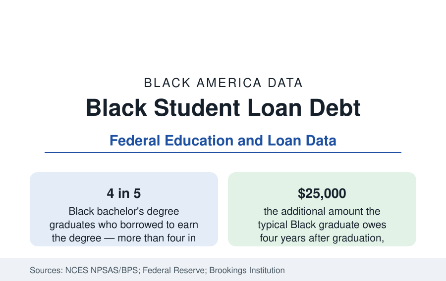

Black Education
Black Student Loan Debt: Borrowing More, Owing Longer
More than four in five Black bachelor's graduates borrow — and four years out they owe about $25,000 more than White graduates. The debt data behind the attainment numbers.

Student debt is the shadow statistic of Black educational attainment: the same degrees documented in this section are financed, for Black students, far more heavily by borrowing. More than four in five Black bachelor's graduates take on student loans, against roughly two in three White graduates, and the balances diverge from there — at graduation the typical Black borrower owes modestly more than the typical White borrower, but four years later the gap has grown to about $25,000, as graduate-school borrowing and interest accumulation compound the original difference. This article reports the borrowing data: who borrows, how much, and what happens after graduation.
Borrowing Rates by Level
The National Center for Education Statistics' student aid studies — surveys that follow representative cohorts of students through and beyond college — record borrowing at every level. Black undergraduates borrow at the highest rates of any major group, in community colleges as well as four-year institutions, and Black graduate students borrow the most of all: professional programs in law, medicine, and allied health, and master's programs in education and social work, are financed overwhelmingly by federal loans for Black students, at balances that routinely exceed six figures in the professional schools. Parent borrowing adds a second layer unique in scale: Black families use federal Parent PLUS loans at high rates to finance their children's undergraduate years, so that a single Black graduate's education often appears on two generations' balance sheets at once — the intergenerational debt structure the wealth data of this reference register downstream.
Why Balances Grow After Graduation
The post-graduation divergence is the most analytically important part of the data, and its mechanisms are arithmetic rather than mysterious. Balances grow when payments fail to cover interest, which happens when early-career earnings are low relative to the balance — the condition the employment section's earnings data predict for Black graduates — or when borrowers enter graduate school and borrow again while the undergraduate balance capitalizes. Federal analyses show Black borrowers are substantially more likely than White borrowers to owe more than they originally borrowed several years after entering repayment. The $25,000 gap four years out, documented in the Brookings Institution's widely cited analysis of the federal cohort data, is the product of those two forces acting on a slightly larger starting balance.
Repayment and Default
Default is where the debt burden becomes a credit event, and the cohort default data show Black borrowers defaulting at roughly twice the rate of White borrowers over long horizons — with the highest rates among borrowers who attended for-profit institutions, did not complete, or both, the populations this section's enrollment article identified as disproportionately Black. The cruelest cell in the data is the small-balance defaulter: borrowers who owe a few thousand dollars on an incomplete credential, whose defaulted loan destroys credit access — to apartments, automobiles, and in some states professional licenses — out of all proportion to the sum. Income-driven repayment enrollment, by contrast, runs high among Black borrowers, and the administrative record of those plans is the empirical core of current policy debate.
Debt and the Wealth Gap
Student debt connects this section directly to the business section's balance-sheet data. The Federal Reserve's consumer finances survey shows education debt as the liability that most distinguishes young Black families' balance sheets, delaying the milestones wealth is built from: median ages of first home purchase run later for Black buyers carrying student debt, business startup — documented in this reference as capital-constrained for Black founders — competes with loan payments for the same dollars, and retirement contributions are deferred in the years when compounding is most valuable. Analysts accordingly treat the student-debt gap not as an education statistic alone but as a transmission belt carrying the attainment era's financing choices into the wealth gap measured a generation later.
Reading the Debt Data
Three cautions govern the figures. Balances at graduation understate lifetime exposure, because graduate borrowing and interest dominate the totals for the most-indebted. Averages conceal the distribution: many Black borrowers owe manageable sums and repay on schedule, while a minority owe sums that dominate their financial lives. And the stock of debt at any moment reflects policy regimes — interest rates, repayment-plan rules, forgiveness programs — that change faster than any other variable in this reference, which is why the debt figures are reported here with their program context named and the underlying borrowing behavior, which changes slowly, kept analytically separate.
Summarized: borrowing is near-universal in Black higher education, balances start higher and grow faster after graduation, default concentrates among non-completers and for-profit attendees, and the debt stock transmits directly into the delayed wealth accumulation of the balance-sheet data. The attainment gains of the past generation are real; the debt data record what they cost, and who is still paying.
More in Black Education
Black Educational Attainment: High School Parity, the College Gap
About 89 percent of Black adults hold a high school diploma and one in four holds a bachelor's degree or higher — the attainment ladder, the college completion gap, and the generational trend.
Historically Black Colleges and Universities: Enrollment and Degrees
More than 100 HBCUs enroll roughly 290,000 students and award about one in six Black bachelor's degrees — an outsized share from a small sector. The federal education data.
Black College Enrollment: 2.4 Million Students
About 2.4 million Black students are enrolled in American colleges — nearly two-thirds of them women. The NCES enrollment data by sector, level, and trend.
Source: National Center for Education Statistics, NPSAS and BPS; Board of Governors of the Federal Reserve System; Brookings Institution analyses of federal loan data.